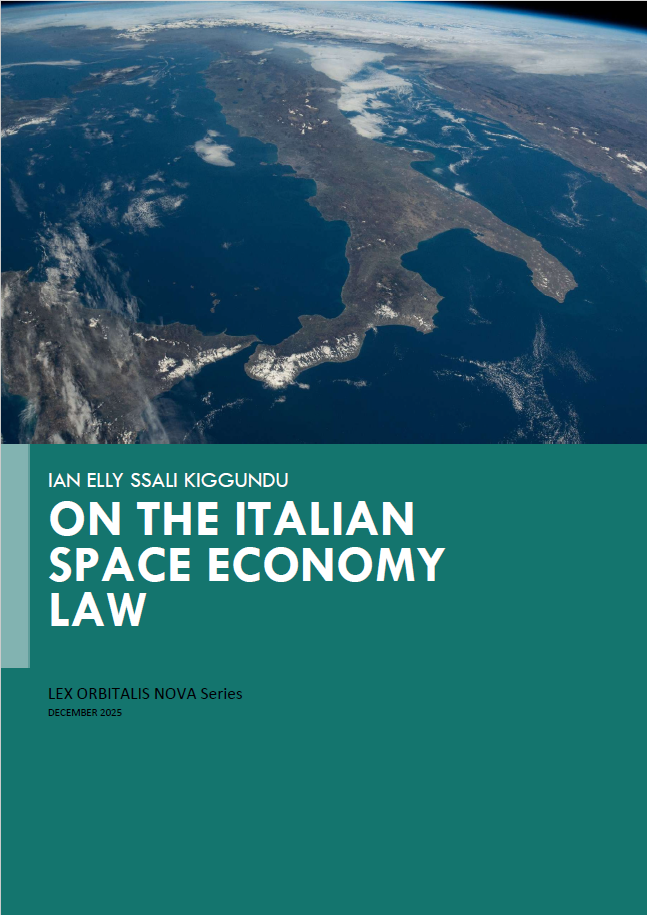

Commercial space activities
Research and analysis on authorisation, supervision, liability, registration and the legal architecture of private space operations.
Ian Elly Ssali Kiggundu
Space-law jurist
Policy specialist
Space law · policy · business
I help companies, institutions and research partners understand the legal and policy frameworks shaping commercial space activities, strategic cooperation and responsible growth.
01
I am an Italian-Ugandan jurist working at the intersection of space law, corporate decision-making and international policy.
My work connects rigorous legal research with the practical questions faced by commercial operators and institutions: how emerging rules affect strategy, how responsibilities are allocated across partnerships, and how organisations can engage responsibly in a rapidly evolving sector.
I bring experience from the European Space Agency, corporate legal work at Linklaters and policy research focused on European and African space governance. I am available for research collaborations, legal-policy analysis, briefings and selected advisory assignments.
02
Focused support for teams that need a clear view of regulation, institutional context and legal risk.
Research and analysis on authorisation, supervision, liability, registration and the legal architecture of private space operations.
Experience reviewing NDAs, MoUs, SaaS and joint-venture arrangements, with attention to governance, allocation of responsibility and ESG considerations.
Concise briefings on European and international developments, including national space laws, EU initiatives and multilateral processes.
Analysis of institutions, financing, partnerships and market development across the European and African space ecosystems.
03
2026–2027
African Space Leadership Institute
Research, advocacy and stakeholder engagement concerning Africa’s space sector and its international partnerships.
2024
Linklaters LLP, Milan
Contract review and drafting support across NDAs, MoUs, SaaS and joint-venture documentation, alongside ESG and corporate-governance research.
2023
European Space Agency, ESRIN
Briefing and institutional support in an international space-agency environment, including work connected with the Director General’s activities.
04
Research developed to be useful beyond academia: for operators, policymakers and institutions.
Book · 2024
A comparative study of the legal frameworks governing orbital stations and the growing participation of private actors, addressing jurisdiction, liability, registration, astronauts, spaceports and emerging commercial models.

“LEX ORBITALIS NOVA” SERIES
A specialist analysis of Italy’s new space legislation, examining its regulatory architecture, authorisation and supervision framework, liability rules and implications for public institutions and commercial operators.
DownloadForthcoming chapter
Research on financial architecture, regional cooperation and the conditions required for stronger intra-African space-sector trade.
Current research
The EU Space Act, space resources, commercial launchers and spaceports, and Europe’s pursuit of strategic autonomy.
Research themes
Orbital infrastructure, sustainability, on-orbit services, private participation and the evolution of international space-law frameworks.
05
Virtual panelist on space law and regulation, Texas A&M University Bush School.
Invited panelist for “From microenterprise to space: new development trajectories in African markets”, Rome.
Expert participant in the United Nations conference dedicated to current developments in international space law.
Expert participant in discussions on emerging lunar activities, commercial actors and related policy needs, Vienna.
Corporate collaboration
I welcome enquiries from space companies, consultancies, research organisations and institutions seeking focused research, briefings or project-based collaboration.
Contact Ianianssali.space@gmail.com